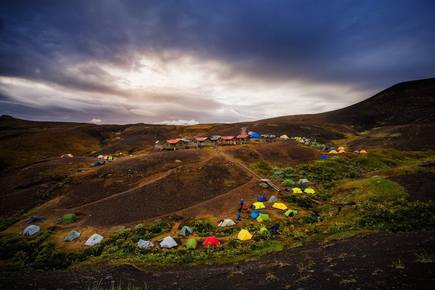
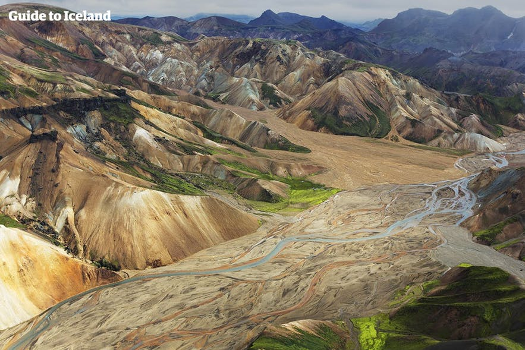
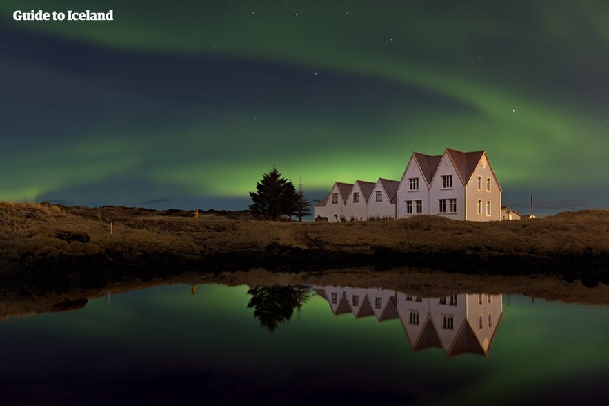

누구나 자신만의 꿈의 여행지가 있다. 아이슬란드가 나에겐 그런 곳이다. 언젠가 TV에서 아이슬란드를 소개하는 방송을 본 적이 있다. 젊은 20대,30대 청년들이 함께 떠나 여행을 다니는 방송이었다. 그 청년들이 아이슬란드의 오로라를 보기 위해 몇 시간씩을 기다리며 기대하는 모습, 그리고 그것을 맞이했을 때 그들이 보인 반응들은 나를 너무 벅차게 만들었다. 그때부터 아이슬란드는 나에게 꼭 가봐야 할 곳이 되었다.
아이슬란드는 여름과 겨울의 매력이 상반된 아주 재미있는 곳이다. 계절에 따라 볼 수 있는 것이 다르고 즐길 수 있는 것 역시 다르다. 따라서 나는 여름과 겨울을 나누어 소개하고 싶다.
여름
여름철 아이슬란드의 평균 기온은 약 10도이다. 이맘때의 아이슬란드는 관광객들로 매우 붐벼 활기가 넘친다. 한여름의 경우 백야때문에 낮을 무한히 즐길 수 있으며, 도로와 하이킹 코스도 어디든 통행이 자유롭고, 겨울에는 얼어붙어 있던 고원지대 또한 관광객들을 맞이한다. 여름에 아이슬란드를 즐기기 가장 쉬운 방법은 캠핑이다.

렌트한 차를 끌고 자신이 원하는 캠핑장에 가 자유롭게 할 수 있다. 장은 보통 마트에서 보지만, 현지 농장에서 좀 더 신선하고 싼 재료를 구매할 수 있다. 대부분의 캠핑장은 경치가 멋진 곳에 자리잡고 있으며, 아이슬란드에서 유명한 관광 명소 인근에 위치한다. 캠핑장에서 하루를 보내고 난 뒤 절경으로 가득한 산에서 하이킹을 즐기는 것도 매우 좋은 선택이다. 아이슬란드의 아름다운 풍경을 감상하며 처음보는 사람들과 이야기도 나누고 걸으며 진정한 여행의 의미를 찾을 수 있다.

겨울
겨울철 아이슬란드의 평균 기온은 약 2도이다. 이때는 섬 자체가 눈과 서리로 뒤덮여 겨울왕국에 온 듯한 느낌을 받을 수 있다. 또한 가장 중요한 오로라가 하늘에서 빛나는 것 역시 볼 수 있다. 겨울에는 확실히 이동반경이나 즐길 수 있는 것들이 줄어들지만 나는 겨울에 아이슬란드의 진정한 매력을 느낄 수 있다고 생각한다. 녹았던 빙하들이 얼면서 신비함으로 가득해진다. 가장 먼저 소개할 것은 빙하가 수없이 떠다니는 호수, 요쿨살론이다.

겨울철에는 사람이 적어 진정한 자연속에서 고요를 느낄 수 있다. 가이드를 동행한 얼음 동굴 하이킹 역시 가능하다. 유럽 최대의 빙하 내에 생긴 이 얼음 동굴을 탐험 하는 것은 생애 단 한번 뿐일 것이다. 마지막으로는 역시 오로라이다. 오로라를 보는 것은 생각보다 쉬운 일이 아니다. 날씨와 오로라 예보를 모두 확인하고 오로라 지수가 높아야만 볼 수 있다. 만약 모든 조건이 갖춰진다면, 차를 가지고 도시 외곽으로 가 초록 빛의 향연을 감상하면 된다.
